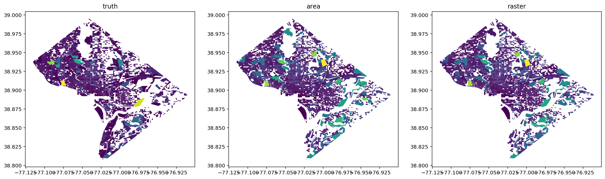

from geosnap import Community
Data prep¶
dc = Community.from_lodes(state_fips="11", years=[2010, 2015])
dc_tracts = Community.from_census(state_fips="11", years=2010)
# tract level data from 2010, this is the source
tracts = dc_tracts.gdf
# block level data from 2015, this is the target
blocks = dc.gdf[dc.gdf.year == 2015]
# original block-level data for 2010, this is the ground truth
test = dc.gdf[dc.gdf.year == 2010]
# rename this variable so its the same on blocks/tracts
tracts["population"] = tracts["n_total_pop"]
# community with mixed geoms
hybrid = Community.from_geodataframes([blocks, tracts])
Harmonizing a community with areal interpolation¶
# this wil take the 2010 tract data and interpolate it to 2015 boundaries (the same as 2010)
# using pure area interpolation here
hybrid_area = hybrid.harmonize(2015, extensive_variables=["population"])
Harmonizing a community with areal interpolation and auxiliary data¶
# this will do the same as above, but will use 2011 NLCD data to constrain the overlay to what's considered developed land
hybrid_raster = hybrid.harmonize(
2015, extensive_variables=["population"], weights_method="land_type_area", raster='../nlcd_2011.tif'
)
/Users/knaaptime/anaconda3/envs/geosnap/lib/python3.7/site-packages/pandas/core/indexing.py:362: SettingWithCopyWarning:
A value is trying to be set on a copy of a slice from a DataFrame.
Try using .loc[row_indexer,col_indexer] = value instead
See the caveats in the documentation: http://pandas.pydata.org/pandas-docs/stable/user_guide/indexing.html#returning-a-view-versus-a-copy
self.obj[key] = _infer_fill_value(value)
/Users/knaaptime/anaconda3/envs/geosnap/lib/python3.7/site-packages/pandas/core/indexing.py:480: SettingWithCopyWarning:
A value is trying to be set on a copy of a slice from a DataFrame.
Try using .loc[row_indexer,col_indexer] = value instead
See the caveats in the documentation: http://pandas.pydata.org/pandas-docs/stable/user_guide/indexing.html#returning-a-view-versus-a-copy
self.obj[item] = s
/Users/knaaptime/anaconda3/envs/geosnap/lib/python3.7/site-packages/tobler/area_weighted/area_weighted.py:482: UserWarning: The CRS for the generated union will be set to be the same as source_df.
"The CRS for the generated union will be set to be the same as source_df."
/Users/knaaptime/anaconda3/envs/geosnap/lib/python3.7/site-packages/rasterstats/io.py:300: UserWarning: Setting nodata to -999; specify nodata explicitly
warnings.warn("Setting nodata to -999; specify nodata explicitly")
/Users/knaaptime/anaconda3/envs/geosnap/lib/python3.7/site-packages/pandas/core/frame.py:4097: SettingWithCopyWarning:
A value is trying to be set on a copy of a slice from a DataFrame
See the caveats in the documentation: http://pandas.pydata.org/pandas-docs/stable/user_guide/indexing.html#returning-a-view-versus-a-copy
errors=errors,
/Users/knaaptime/anaconda3/envs/geosnap/lib/python3.7/site-packages/pandas/core/indexing.py:362: SettingWithCopyWarning:
A value is trying to be set on a copy of a slice from a DataFrame.
Try using .loc[row_indexer,col_indexer] = value instead
See the caveats in the documentation: http://pandas.pydata.org/pandas-docs/stable/user_guide/indexing.html#returning-a-view-versus-a-copy
self.obj[key] = _infer_fill_value(value)
/Users/knaaptime/anaconda3/envs/geosnap/lib/python3.7/site-packages/pandas/core/indexing.py:480: SettingWithCopyWarning:
A value is trying to be set on a copy of a slice from a DataFrame.
Try using .loc[row_indexer,col_indexer] = value instead
See the caveats in the documentation: http://pandas.pydata.org/pandas-docs/stable/user_guide/indexing.html#returning-a-view-versus-a-copy
self.obj[item] = s
/Users/knaaptime/anaconda3/envs/geosnap/lib/python3.7/site-packages/tobler/area_weighted/area_weighted.py:482: UserWarning: The CRS for the generated union will be set to be the same as source_df.
"The CRS for the generated union will be set to be the same as source_df."
/Users/knaaptime/anaconda3/envs/geosnap/lib/python3.7/site-packages/rasterstats/io.py:300: UserWarning: Setting nodata to -999; specify nodata explicitly
warnings.warn("Setting nodata to -999; specify nodata explicitly")
/Users/knaaptime/anaconda3/envs/geosnap/lib/python3.7/site-packages/pandas/core/frame.py:4097: SettingWithCopyWarning:
A value is trying to be set on a copy of a slice from a DataFrame
See the caveats in the documentation: http://pandas.pydata.org/pandas-docs/stable/user_guide/indexing.html#returning-a-view-versus-a-copy
errors=errors,
interpolated_area = hybrid_area.gdf[hybrid_area.gdf.year == 2010]
interpolated_raster = hybrid_raster.gdf[hybrid_raster.gdf.year == 2010]
import matplotlib.pyplot as plt
fig, axs = plt.subplots(1, 3, figsize=(20, 8))
titles = ["truth", "area", "raster"]
for i, data in enumerate([test, interpolated_area, interpolated_raster]):
data.plot("population", ax=axs[i])
axs[i].set_title(titles[i])

diff = test.population - interpolated_area.population
diff.hist()
diff.describe()
count 2972.000000
mean -64.920946
std 349.157335
min -3220.932581
25% -153.752782
50% -47.376116
75% 40.783046
max 3618.364054
Name: population, dtype: float64

diff = test.population - interpolated_raster.population
diff.hist()
diff.describe()
count 2972.000000
mean -64.857111
std 337.507961
min -3188.934689
25% -159.655217
50% -50.393351
75% 37.842331
max 3621.922652
Name: population, dtype: float64